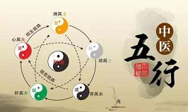

科室介绍
中医内科是健益堂中医门诊部集医疗、教学、科研于一体的重要临床科室，是中医岐轩医学体系辽宁省重点发展临床教学基地，多名医师成为第三代岐轩医学传承人。它集中体现了中医的整体观念和辨证施治之精粹。运用传统的中医理论结合现代的诊疗手段，对患者进行治疗、预防、康复和调摄。它既继承了历代医家的学术思想和医疗经验，又吸取了现代中医的新进展，新成就，以之运用于临床实践。全科人才荟萃，技术力量雄厚，均具有丰富的临床经验和较高的学术水平和独创的治疗经验。治疗内科常见病、多发病及疑难杂症，疗效显著。如胃炎、高血压、气管炎、糖尿病、脂肪肝、前列腺炎、阳痿早泄、心血管疾病、肝炎胆囊炎、哮喘、失眠、抑郁等。
